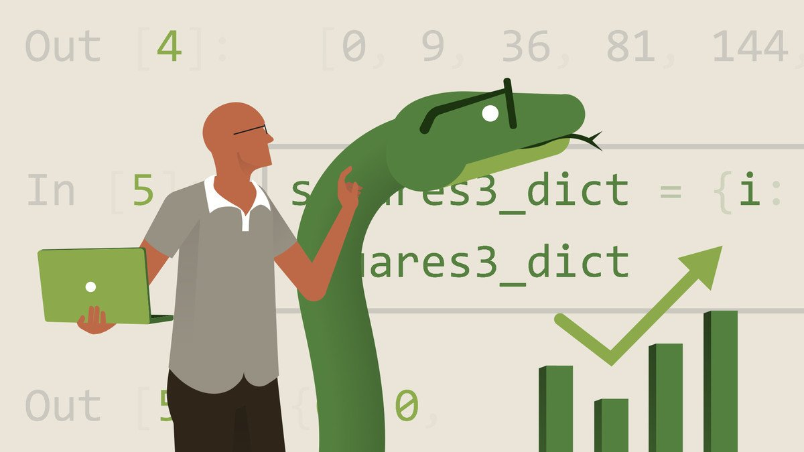

Featured Courses

Data Analysis with Python
Master data manipulation, visualization, and analysis using Python libraries.


Master data manipulation, visualization, and analysis using Python libraries.